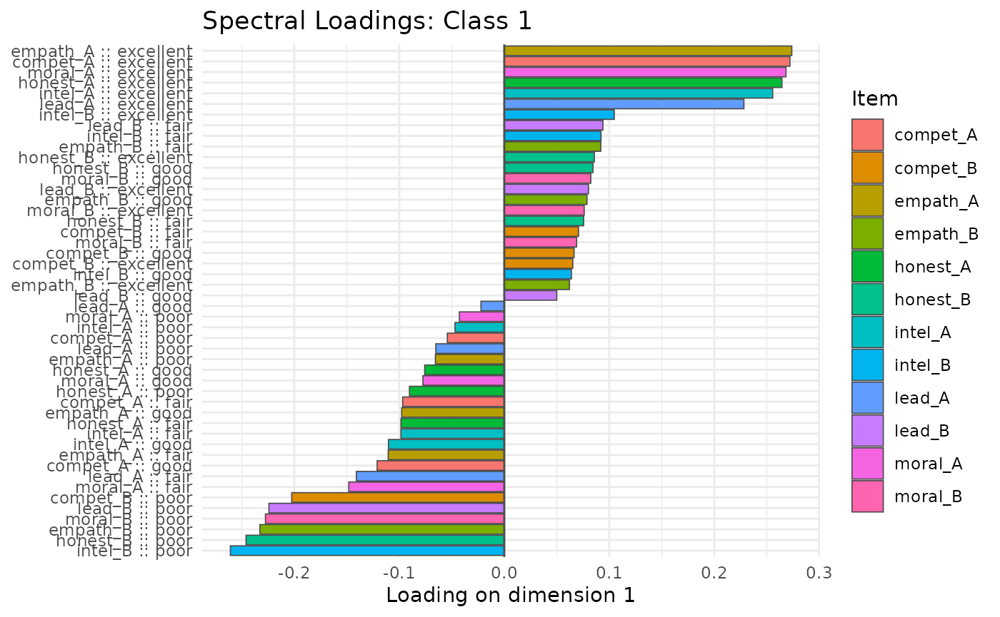
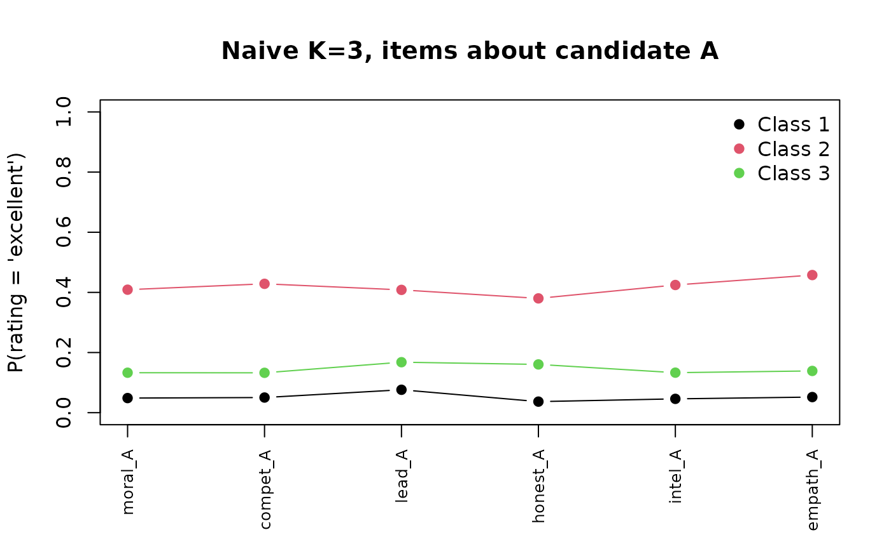

A Workflow for Latent Class Analysis: Naive Fit, BVR Adjustments, and Spectral Local Dependence
Ali Sanaei
2026-05-29
Source:vignettes/workflow.Rmd
workflow.RmdWhy this vignette
Latent class models are easy to over-trust. The default specification assumes the manifest indicators are locally independent within each class. That is, conditional on class membership the items carry no further information about each other. When that assumption is violated, the EM algorithm compensates by inventing extra classes whose only purpose is to absorb pairwise correlation. The resulting solution inflates , distorts class meaning, and inflates the standard errors of any downstream distal analysis.
This vignette walks through three responses to that problem on a single dataset:
- A naive fit that treats local independence as given.
- A BVR-guided fit that adds pairwise direct effects between manifest items whose bivariate residuals (Vermunt, 1999) exceed a chi-squared threshold.
- A fit with Spectral Local Dependence (SLD), a
low-rank decomposition of the conditional Burt matrix that captures
correlated structure across many items at once (see the
companion vignette
vignette("sld-theory")for the math).
We use the package’s embedded dataset voter_perceptions,
a 2000- respondent synthetic survey rating two hypothetical candidates
(“A” and “B”) on six attributes each (moral character, competence,
leadership, honesty, intelligence, empathy). Items come in conceptually
parallel pairs (moral_A/moral_B, and so on),
so we have an a priori reason to expect local dependence:
ratings of the same candidate cluster together via a shared partisan
affect.
Setup
data(voter_perceptions)
cat_items <- names(voter_perceptions)
length(cat_items) # 12 items
nrow(voter_perceptions)Each item is rated on a four-level ordinal scale (poor,
fair, good, excellent).
1. The naive fit: ignore local dependence
We fit two-, three-, and four-class models with local independence on the categorical side.
voter_fits <- lapply(2:4, function(K) {
fit_lca(voter_perceptions, categorical = cat_items, n_classes = K,
control = lca_control(n_starts = 5),
verbose = FALSE)
})
names(voter_fits) <- paste0("K", 2:4)
compare_models(voter_fits)
#> K LL n_params AIC BIC aBIC entropy ICL
#> K2 2 -30684.79 73 61515.59 61924.45 61692.53 0.8455514 62352.68
#> K3 3 -30210.13 110 60640.26 61256.36 60906.89 0.8210257 62042.86
#> K4 4 -29933.25 147 60160.50 60983.84 60516.81 0.7775972 62217.10The standard reading: BIC drops as we add classes, with narrowly best. Entropy is in the comfortable range. Most analysts would declare success around or .
That conclusion is fragile.
2. Diagnosing local dependence with bivariate residuals
bvr_categorical() computes a chi-squared statistic for
each pair of items, contrasting the observed bivariate frequency against
what the model predicts under local independence. Values above 3.84
indicate significant local dependence
(,
).
fit_K3 <- voter_fits$K3
bvr_K3 <- bvr_categorical(fit_K3, voter_perceptions)
head(bvr_K3, 8)
#> var1 var2 bvr df p_value
#> 60 honest_B empath_B 39.06999 9 1.119057e-05
#> 55 honest_A empath_A 36.92597 9 2.713100e-05
#> 10 moral_A empath_A 36.18024 9 3.683042e-05
#> 53 honest_A intel_A 34.90900 9 6.182610e-05
#> 6 moral_A honest_A 32.06790 9 1.938177e-04
#> 65 intel_B empath_B 31.46768 9 2.460168e-04
#> 21 moral_B empath_B 29.02435 9 6.419408e-04
#> 19 moral_B intel_B 28.70541 9 7.264792e-04Several pairs sit far above the threshold, and the structure is not
random. Most of the largest residuals fall along the candidate diagonal
(_A items pair with other _A items,
_B items pair with other _B items). The model
is forcing parallel ratings of the same candidate to look conditionally
independent when they manifestly are not.
3. BVR-guided specification search
auto_bvr() automates the Hagenaars-Vermunt-Magidson
specification search: at each step it identifies the largest BVR pair,
adds it as a direct effect, refits, and stops when BIC ceases to improve
(or a cap is hit).
voter_bvr <- auto_bvr(
data = voter_perceptions, categorical = cat_items,
K_range = 3, # fix K so the comparison stays clean
max_direct_effects = 4L,
bvr_threshold = 3.84,
verbose = FALSE,
n_starts = 5)
voter_bvr$auto_path$direct_effects
#> list()The search added zero direct effects. The top
candidate (honest_B → empath_B, BVR ~ 39) was tested first;
adding it raised BIC rather than lowering it, so auto_bvr
rejected it and stopped.
That is informative on its own. The bivariate residuals are substantively large, but the cost of fitting a full conditional probability table for each pair exceeds the gain in fit. The underlying dependence is broad rather than concentrated in a few isolated pairs, so pairwise direct effects are not a parameter- efficient response.
fi_naive <- fit_indices(fit_K3)
fi_bvr <- fit_indices(voter_bvr)
data.frame(
Model = c("Naive K=3", "auto_bvr K=3"),
log_lik = round(c(fi_naive$log_lik, fi_bvr$log_lik), 2),
n_params = c(fi_naive$n_params, fi_bvr$n_params),
BIC = round(c(fi_naive$BIC, fi_bvr$BIC), 2),
entropy = round(c(fi_naive$entropy, fi_bvr$entropy), 3)
)
#> Model log_lik n_params BIC entropy
#> 1 Naive K=3 -30210.13 110 61256.36 0.821
#> 2 auto_bvr K=3 -30210.13 110 61256.36 0.821Identical numbers because auto_bvr returned the naive
K=3 model unchanged. On this dataset, pairwise remediation does not
help.
Is auto_bvr just being greedy? A robustness probe
auto_bvr is a greedy search: it tries the single biggest
BVR pair, sees BIC worsen, and gives up. A reasonable question is
whether some other pair (further down the BVR ranking) would
have helped, or whether a combination of pairs would together
pay for themselves even if no single pair does. The code below tries
several hand-picked direct-effect specifications. We do not evaluate the
chunk during vignette rendering; the printed numbers come from a
one-time interactive run on the same data and seed.
baseline_BIC <- fit_indices(fit_K3)$BIC # 61256.36
trial_pairs <- list(
list(c("moral_A", "empath_A")),
list(c("moral_B", "empath_B")),
list(c("intel_A", "compet_A")),
list(c("intel_B", "compet_B")),
list(c("moral_A", "empath_A"), c("moral_B", "empath_B")),
list(c("moral_A", "empath_A"), c("moral_B", "empath_B"),
c("intel_A", "compet_A"))
)
for (de in trial_pairs) {
fit <- fit_lca(voter_perceptions, categorical = cat_items, n_classes = 3,
cat_direct_effects = de,
control = lca_control(n_starts = 3),
verbose = FALSE)
cat(length(de), "DE(s): BIC =", round(fit_indices(fit)$BIC, 2), "\n")
}Results (naive baseline BIC = 61256.36):
| Direct effect(s) | BIC | BIC |
|---|---|---|
moral_A~empath_A
|
61401.26 | +144.9 |
moral_B~empath_B
|
61395.98 | +139.6 |
intel_A~compet_A
|
61400.70 | +144.3 |
intel_B~compet_B
|
61400.48 | +144.1 |
moral_A~empath_A +
moral_B~empath_B
|
61541.01 | +284.7 |
| Three pairs (A-only + B-only + intel/compet A) | 61686.78 | +430.4 |
Every candidate raises BIC. Each direct-effect specification costs
roughly 25 parameters (a
conditional table per class, three classes, four-level items) and the
log-likelihood gain is not enough to amortize them.
auto_bvr’s decision to stop after one rejected candidate
was not a quirk of the greedy heuristic. On this dataset, no
combination of pairwise direct effects beats the naive K=3
baseline.
The reason is structural. The generative model behind
voter_perceptions has a class-specific shared latent factor
that shifts every item rating about the favoured candidate at
once. A direct effect on one pair captures a slice of that shift, but
spends parameters proportional to the slice. The whole shift is
better modelled as a single low-rank direction, which is exactly what
SLD does.
4. Spectral Local Dependence (SLD)
When pairwise dependence is broad, the right tool is a
low-rank shift to the class-conditional log response surface
rather than a sequence of pairwise terms. auto_sld() runs a
greedy forward search over class-specific ranks, adding one rank to the
class with the largest unmodelled eigenvalue, accepting only if BIC
improves.
voter_sld <- auto_sld(
data = voter_perceptions, categorical = cat_items,
n_classes = 3,
max_rank_per_class = 3L,
criterion = "BIC",
verbose = FALSE)
voter_sld$specs$spectral_rank
#> [1] 1 0 0
round(fit_indices(voter_sld)$BIC, 2)
#> [1] 60996.6auto_sld settles at ranks [1, 0, 0]: a
single low-rank direction captures the dominant residual structure in
the largest class, while the smaller classes need no spectral
correction. The BIC drops from ~61256 (naive K=3) to ~60997, a savings
of ~260 points.
Is rank 1 really enough? A d-sweep
auto_sld’s greedy search accepted exactly one rank in
exactly one class. A natural worry is that a richer specification (more
ranks, or ranks in additional classes) might do better. The code below
fits every plausible alternative once, with the same seed and starts. As
before we ship the chunk as eval = FALSE; the numbers below
come from a one-time run.
ranks_to_try <- list(
c(1L, 0L, 0L), # the auto_sld pick
c(2L, 0L, 0L),
c(3L, 0L, 0L),
c(1L, 1L, 1L),
c(2L, 1L, 0L),
c(2L, 1L, 1L),
c(2L, 2L, 2L)
)
for (r in ranks_to_try) {
fit <- fit_lca(voter_perceptions, categorical = cat_items, n_classes = 3,
spectral_rank = r,
control = lca_control(n_starts = 3),
verbose = FALSE)
cat(paste(r, collapse = ","), " BIC =", round(fit_indices(fit)$BIC, 2),
" n_params =", fit$n_params, "\n")
}Results (naive K=3 baseline BIC = 61256.36):
| Ranks | BIC | BIC vs. naive | |
|---|---|---|---|
| (1, 0, 0) | 145 | 60996.60 | -259.8 |
| (2, 0, 0) | 178 | 61159.38 | -97.0 |
| (1, 1, 1) | 215 | 61183.31 | -73.1 |
| (2, 1, 0) | 213 | 61232.01 | -24.3 |
| (2, 1, 1) | 248 | 61358.55 | +102.2 |
| (3, 0, 0) | 209 | 61416.08 | +159.7 |
| (2, 2, 2) | 314 | 61792.47 | +536.1 |
Two things to read off the table.
First, (1, 0, 0) is the unique BIC-optimum among
reasonable configurations. The greedy auto_sld did not just
find an improvement; it found the improvement.
Second, adding a second rank in the dominant class hurts: (2, 0, 0) beats (3, 0, 0) but is itself worse than (1, 0, 0) by ~160 BIC points. The interpretation is that after the first eigen-direction is removed, the remaining residual covariance in the dominant class is too thin to justify its 33-parameter cost.
The same is true across classes: adding rank-1 to all three classes gives (1, 1, 1) with BIC 61183, worse than (1, 0, 0) by ~190 points. The smaller classes have small unmodelled eigenvalues, and the data don’t pay for capturing them.
This is auto_sld working exactly as designed: the
eigenvalue-by-BIC search is a principled, data-adaptive way to avoid
both over-modelling (paying for noise eigenvalues) and under-modelling
(missing real residual covariance).
5. Three-way comparison
fi_naive4 <- fit_indices(voter_fits$K4)
fi_sld <- fit_indices(voter_sld)
data.frame(
Model = c("Naive K=3", "Naive K=4", "auto_bvr K=3",
"SLD K=3 (ranks 1,0,0)"),
n_params = c(fi_naive$n_params, fi_naive4$n_params,
fi_bvr$n_params, fi_sld$n_params),
BIC = round(c(fi_naive$BIC, fi_naive4$BIC,
fi_bvr$BIC, fi_sld$BIC), 2),
entropy = round(c(fi_naive$entropy, fi_naive4$entropy,
fi_bvr$entropy, fi_sld$entropy), 3)
)
#> Model n_params BIC entropy
#> 1 Naive K=3 110 61256.36 0.821
#> 2 Naive K=4 147 60983.84 0.778
#> 3 auto_bvr K=3 110 61256.36 0.821
#> 4 SLD K=3 (ranks 1,0,0) 145 60996.60 0.822Reading the table: the naive K=4 model and the SLD K=3 model are roughly tied on BIC. The naive K=4 fit absorbs the residual covariance by adding an extra class whose only purpose is to soak up shared variance; the SLD K=3 fit captures the same structure in a single low-rank direction without inflating the class count. The SLD solution is more interpretable because the three classes retain their substantive meaning (favours A, favours B, moderate), and the residual covariance is explicitly modelled rather than hidden inside an extra class.
You can inspect the loadings to read off which items contribute to each latent direction:
plot(voter_sld, type = "spectral_loadings", dimension = 1, class = 1)
SLD loadings: rank 1 in the largest class.
6. Substantive comparison: who are the classes?
props_naive <- round(colMeans(get_posteriors(fit_K3)), 3)
props_sld <- round(colMeans(get_posteriors(voter_sld)), 3)
data.frame(class = 1:3, naive = props_naive, sld = props_sld)
#> class naive sld
#> 1 1 0.211 0.473
#> 2 2 0.447 0.322
#> 3 3 0.341 0.205The class proportions move only slightly between the naive K=3 fit and the SLD-augmented fit. The substantive class meaning is preserved across the two specifications:
extract_excellent <- function(fit, items) {
K <- fit$n_classes
cp <- fit$categorical_params
out <- matrix(NA_real_, K, length(items),
dimnames = list(paste("Class", 1:K), items))
for (k in 1:K) {
for (it in items) {
probs <- cp[[k]][[it]]
hit <- which(names(probs) == "excellent")
if (length(hit)) out[k, it] <- probs[[hit[1]]]
}
}
out
}
a_items <- grep("_A$", cat_items, value = TRUE)
mat_naive <- extract_excellent(fit_K3, a_items)
matplot(t(mat_naive), type = "b", pch = 19, lty = 1,
xaxt = "n", xlab = "", ylab = "P(rating = 'excellent')",
ylim = c(0, 1),
main = "Naive K=3, items about candidate A")
axis(1, at = seq_along(a_items), labels = a_items, las = 2, cex.axis = 0.8)
legend("topright", legend = rownames(mat_naive), pch = 19,
col = 1:nrow(mat_naive), bty = "n")
Naive K=3: P(rating = ‘excellent’) for the six A-items.
The three classes separate as expected from the generative model: one strongly positive about candidate A, one negative (these are the class that favours B), and one moderate.
7. Takeaways
-
Run the diagnostic. A satisfying BIC trajectory
across
is not evidence that your specification is correct. Always inspect
bvr_categorical()(for categorical indicators) orbvr_tests()(for continuous) before naming the classes. -
Pairwise vs. low-rank. Direct effects handle a few
large isolated residual pairs efficiently; SLD handles broad residual
covariance efficiently. The two are complementary.
fit_lca()lets you supply both viacat_direct_effectsandspectral_rank. - Don’t add classes to absorb dependence. The naive K=4 fit looked like it was winning on BIC. Once we model the local dependence properly via SLD, K=3 is fine, and class meaning is preserved across refits.
See also:
-
vignette("distal-covariates")for distal outcome estimation under BCH weighting, and for the formula interface to concomitant predictors. -
vignette("sld-theory")for the math and a worked example.
Session info
sessionInfo()
#> R version 4.6.0 (2026-04-24)
#> Platform: x86_64-pc-linux-gnu
#> Running under: Ubuntu 24.04.4 LTS
#>
#> Matrix products: default
#> BLAS: /usr/lib/x86_64-linux-gnu/openblas-pthread/libblas.so.3
#> LAPACK: /usr/lib/x86_64-linux-gnu/openblas-pthread/libopenblasp-r0.3.26.so; LAPACK version 3.12.0
#>
#> locale:
#> [1] LC_CTYPE=C.UTF-8 LC_NUMERIC=C LC_TIME=C.UTF-8
#> [4] LC_COLLATE=C.UTF-8 LC_MONETARY=C.UTF-8 LC_MESSAGES=C.UTF-8
#> [7] LC_PAPER=C.UTF-8 LC_NAME=C LC_ADDRESS=C
#> [10] LC_TELEPHONE=C LC_MEASUREMENT=C.UTF-8 LC_IDENTIFICATION=C
#>
#> time zone: UTC
#> tzcode source: system (glibc)
#>
#> attached base packages:
#> [1] stats graphics grDevices utils datasets methods base
#>
#> other attached packages:
#> [1] mixLCA_1.0.1
#>
#> loaded via a namespace (and not attached):
#> [1] gtable_0.3.6 jsonlite_2.0.0 dplyr_1.2.1 compiler_4.6.0
#> [5] tidyselect_1.2.1 Rcpp_1.1.1-1.1 jquerylib_0.1.4 systemfonts_1.3.2
#> [9] scales_1.4.0 textshaping_1.0.5 yaml_2.3.12 fastmap_1.2.0
#> [13] ggplot2_4.0.3 R6_2.6.1 labeling_0.4.3 generics_0.1.4
#> [17] knitr_1.51 tibble_3.3.1 desc_1.4.3 bslib_0.11.0
#> [21] pillar_1.11.1 RColorBrewer_1.1-3 rlang_1.2.0 cachem_1.1.0
#> [25] xfun_0.57 fs_2.1.0 sass_0.4.10 S7_0.2.2
#> [29] cli_3.6.6 pkgdown_2.2.0 withr_3.0.2 magrittr_2.0.5
#> [33] digest_0.6.39 grid_4.6.0 lifecycle_1.0.5 vctrs_0.7.3
#> [37] evaluate_1.0.5 glue_1.8.1 farver_2.1.2 ragg_1.5.2
#> [41] rmarkdown_2.31 tools_4.6.0 pkgconfig_2.0.3 htmltools_0.5.9